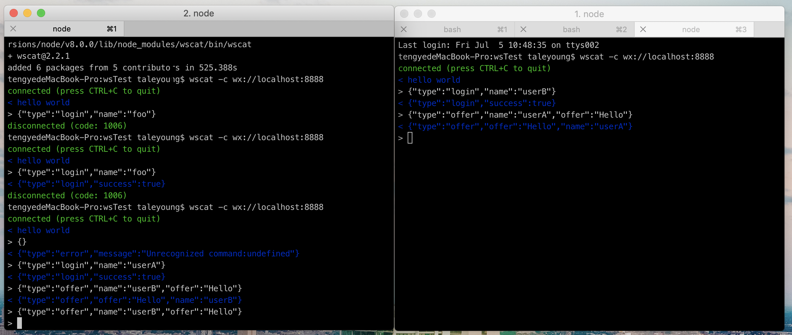

webRTC 背景知识
建立一个简单的 webRTC 应用
webSocket 与初识信令服务器
首先安装一个支持 webSocket 的库 ws
1 | npm i -g ws |
下面来测试一下 ws
我们在服务端输入一下代码
1 | var WebSocketServer = require("ws").Server, |
完成之后使用 node test.js 运行这个服务
同时在一个新的终端下面运行 wscat -c ws://localhost:8888
成功之后服务端会输出 user connected
客户端会输出服务端 send 的 hello world
发起通话
这里需要理解发起通话时通过什么来完成的，这里我们将其写到获取 data 的 type 中去识别，在 users 中查找被呼叫者的 id，然后建立 connection,发送期内容，这里的服务端其实相当于一个中转。
1 | case "offer": |
呼叫应答
有了上一节的简单理解，被呼叫者的表现即为收到服务端的消息，我们在’offer’的 case 之后再增加’answer’，如下
1 | case "answer": |
代码几乎一致，因为说到底，他们都只是会话的不同形式。
处理 ICE 候选路径
呼叫挂断
这个步骤不涉及 webRTC 的规范的，在进行挂断之后，便可以让我们的用户从一方断开，呼叫其他用户。
在完成项目的步骤之后，我们进行测试，在不同的客户端通过 es 进行通信，效果如下

服务端的响应如下